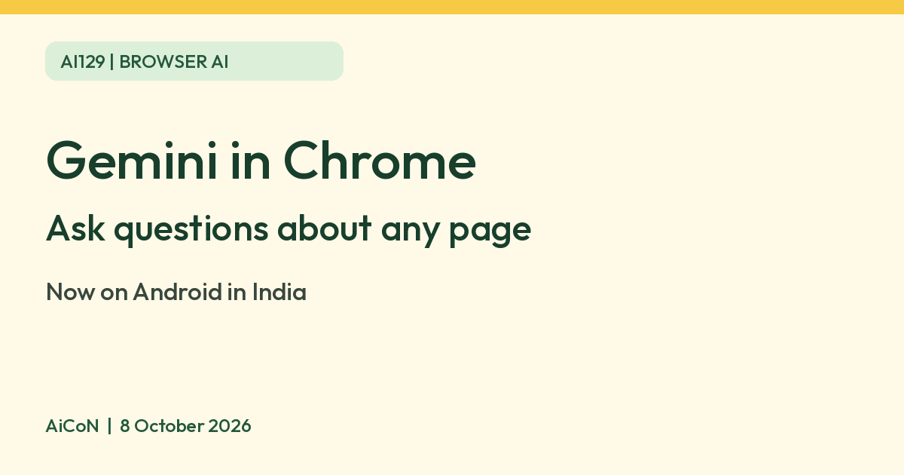

Gemini in Chrome on Android: ask questions about the page you are reading
Google says Gemini in Chrome, its AI browsing assistant, is now available to all Android users in India. It can summarise long articles and answer questions about the web page you are on.

What it is
Google's India blog (7 October 2026) says Gemini in Chrome is an AI browsing assistant, brought to desktops in India earlier this year and now also available to all Android users in India.
What Google says it does
- Summarises long articles.
- Answers questions about web pages.
- Connects with Google apps such as Keep and Calendar without switching tabs.
- Customises and generates images with Nano Banana.
Limits to know
- On Android it is initially available in US-English and UK-English, with other languages planned.
- Auto browse, which handles tasks like filling a long form, is only for Google AI Pro and AI Ultra subscribers, and only on devices set to English. Google says it asks for confirmation before some sensitive tasks.
- AI summaries can miss details. Check the page for anything important, such as dates, fees or medical advice.
- The post states no price for Gemini in Chrome itself, so we quote none. We did not test it ourselves.
AiCoN checkRead Google's India blog post of 7 October 2026 and its March 2026 India announcement on 8 October 2026. We could not read the post's footnote on device requirements, so check what your phone needs inside Chrome.
Frequently asked questions
Is auto browse included?
Google says auto browse in India is for AI Pro and AI Ultra subscribers.
Does it work in Hindi or Malayalam on Android?
Google's post says Android starts with US and UK English, with more languages coming. Its March post lists many Indian languages for the desktop rollout.
Sources: Google India blog, 7 October 2026, Google India blog, 11 March 2026. Checked 8 October 2026.